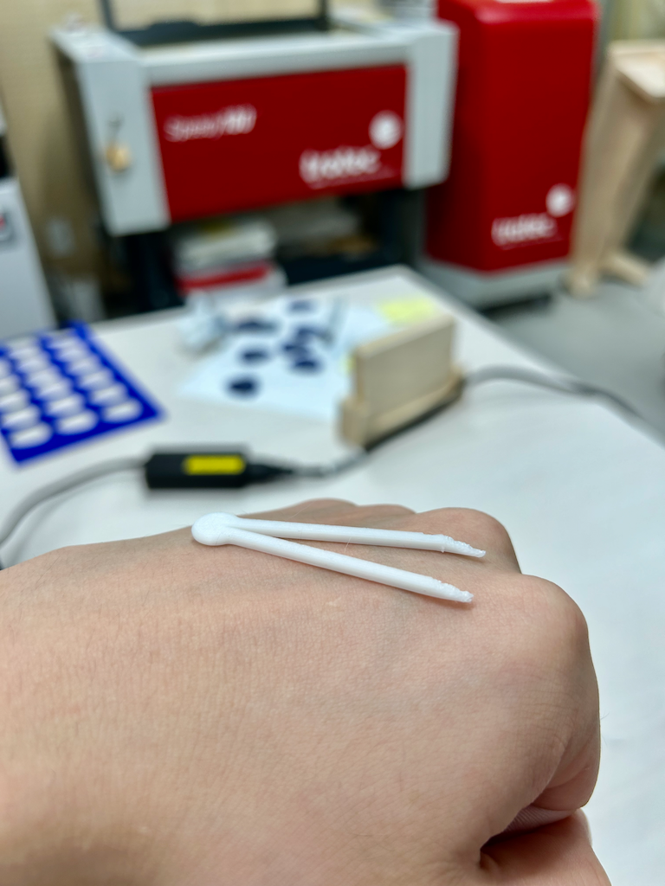
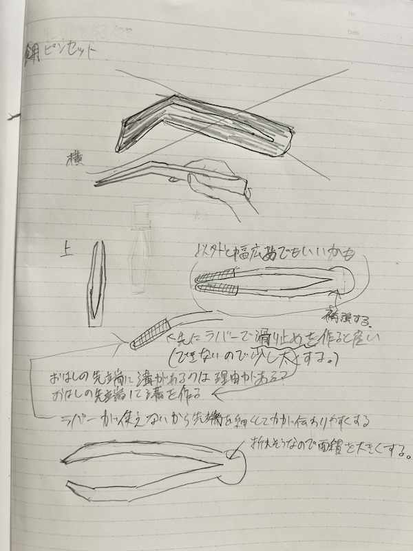
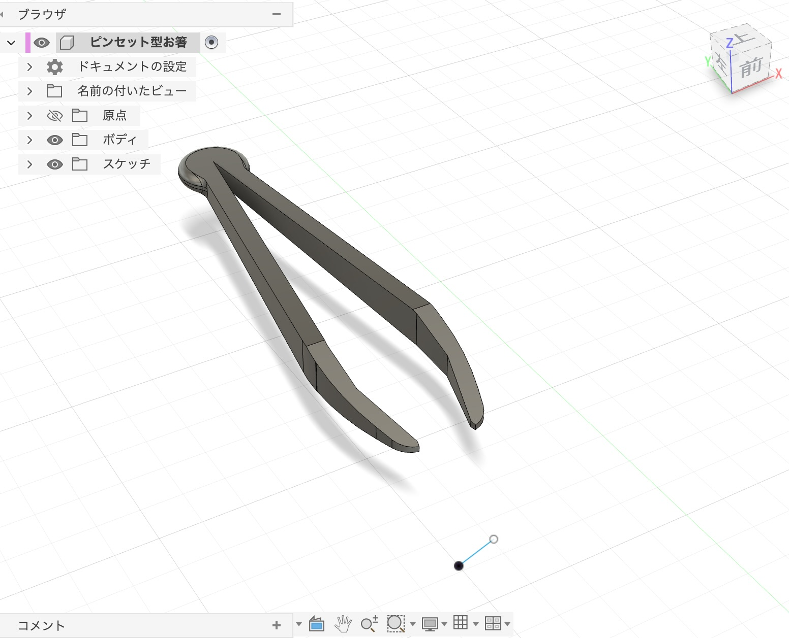
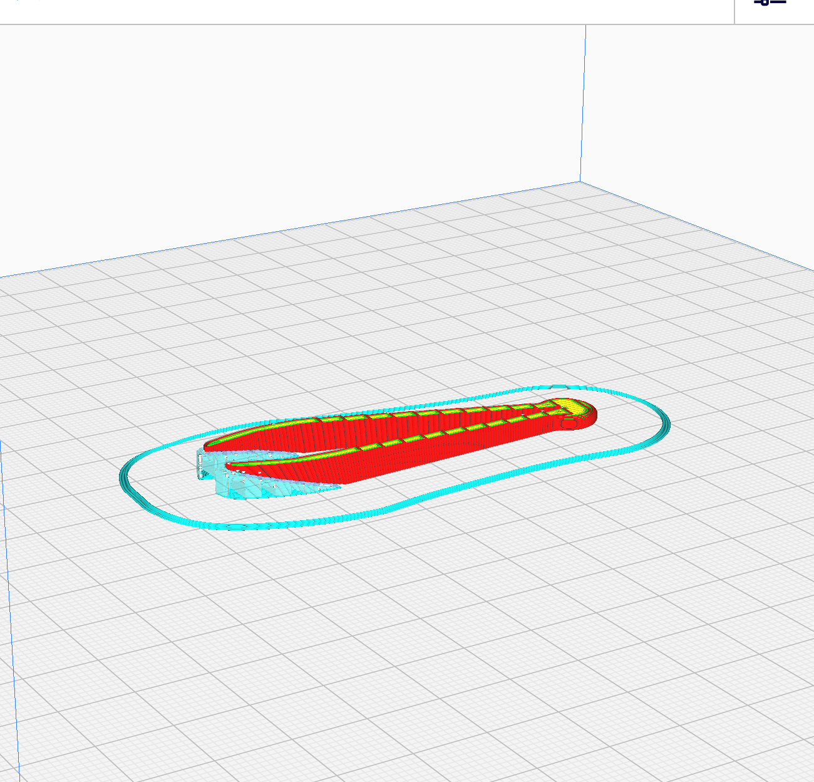
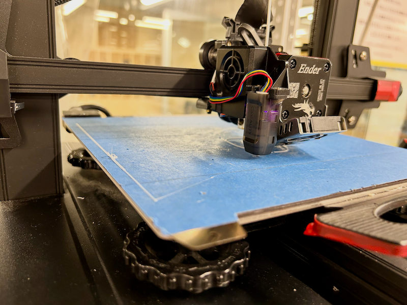
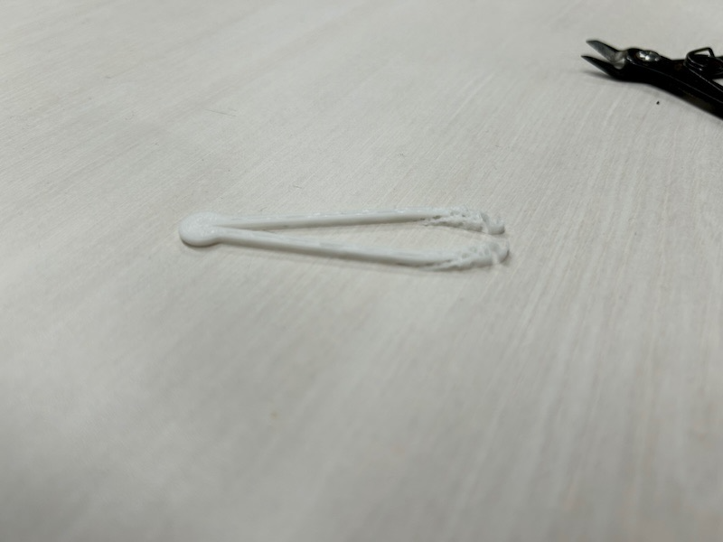
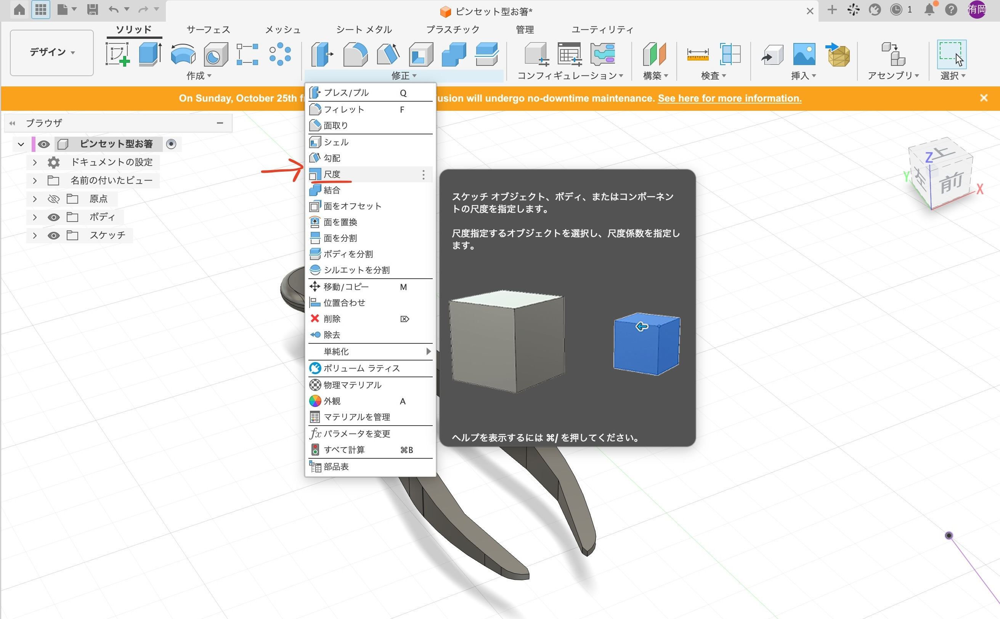
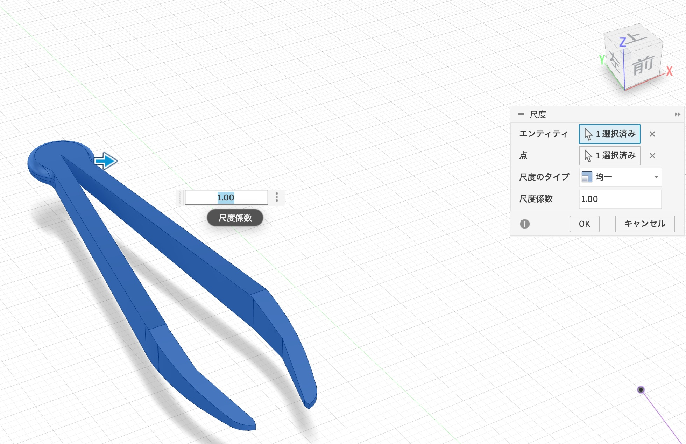

画像を表示(40%)

この作品は、ピンセットの形をしたお箸です。外国人の方や子供など箸を使うのが苦手な人のために、より簡単につかめるように設計されました。
ピンセットの指で掴みやすい形状を生かして少しの力でも掴んだものを落としづらくなっています
ピンセットの掴みやすさに着目し、外国人の方など箸を使うのが苦手な人のためにより簡単につかめるピンセット型のお箸を作ろうと思った。
画像を表示(40%)

画像を表示(40%)

画像を表示(40%)

サポート材つけたのはこの段階。理由は制作の上で調べたことにて後述
画像を表示(40%)

画像を表示(40%)

Fusion360でモデルの縮尺を変えるには、まずモデルを選択し、右クリックして「スケール」を選択します。次に、スケールの値を入力することで、モデルのサイズを変更することができます。
さらに修正から縮尺を選択することで、モデルの縮尺を変更することもできます。
画像を表示(40%)


少し浮いている３Dモデルを持ち込んだため、うまくプリントされず途中で剥がれてしまった。
画像を表示(40%)
そこでサポート材を浮いているところにつけた。すると浮いているところを地面に固定することができたため、うまくプリントすることができた。